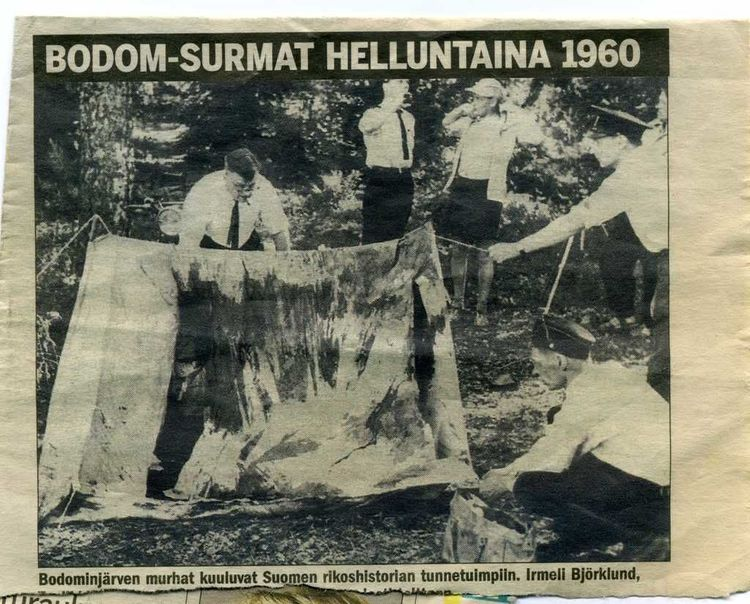

1960년 6월 5일, 핀란드의 헬싱키 근교에 위치한 보돔 호수에서 청소년 3명이 살해당하고 1명이 중상을 입은 살인사건이다.
용의자가 3명이나 존재하지만 모두 알리바이가 성립되어 체포되지 못했고,
60년이 넘도록 범인이 잡히지 않아 사실상 영구 미제 사건이 되었다.
1960년 6월 4일, 마일리 이르멜리 비에르클룬드, 아냐 툴리키 매키, 세포 안테로 보이스만 ,
닐스 빌헬름 구스타프손 등 4명은 보돔 호수로 놀러가 수영과 낚시를 즐긴 후
거기서 하룻밤 야영을 하기로 했다. 보돔 호수는 에스포(Espoo) 시 교외에 있고 핀란드 수도 헬싱키에서도 그리 멀지 않았다.
아이들은 자정까지 놀다가 잠이 들었고, 고작 2시간만 자고 오전 2시에 일어나 다시 놀러갔다고 한다.
남자인 세포와 닐스는 낚시를 갔다. 여자인 마일리와 아냐는 호숫가에서 물놀이를 하다가,
남자들이 낚시를 마치고 텐트에 돌아오자 다시 잠이 들었다.
날이 밝고 6월 5일, 이 바닷가에 놀러온 소년 2명이 산책하던 중에 위 4명이 타고 온 오토바이를 발견했다.
두 소년은 오토바이를 가까이서 보려고 다가갔는데 그 옆에는 뭉개진 텐트가 있었다.
바로 그 소년, 소녀들이 야영하던 텐트였다. 그런데 그 뭉개진 텐트 밖으로 발이 삐져나온 데다,
닐스가 둔기로 얻어 맞아 텐트 위에서 피를 흘리며 숨을 헐떡거리는 모습을 보고 소년들은
깜짝 놀라 곧바로 인근에 위치한 경찰서로 달려가 신고했다. 경찰들이 급히 출동해 텐트 안을 살펴보니 텐트 안에는
참혹한 모습으로 변한 소년, 소녀의 시체들이 있었다.
4명이 모두 모두 둔기로 얻어 맞았는데 닐스만 중상에 그쳐 살아남았고,
마일리와 아냐, 세포는 모두 둔기에 맞아 죽은 채로 발견되었다.
게다가 이 아이들의 몸에는 둔기만이 아니라 칼에 찔린 상처도 있었는데,
특히 마일리의 시신에는 무려 15군데나 칼에 찔린 자국이 있었다.
그런데 이들을 찌르고 때리는 데 쓰였을 칼과 둔기는 어디에서도 보이지 않았다.
죽은 3명의 사망추정시각은 6월 5일 새벽 4시~6시 사이로 밝혀졌다.
경찰 조사 결과 텐트는 바깥에서 안으로 찢어졌다고 한다.
이로 보아 범인이 소년, 소녀 4명이 야영하는 텐트를 노리고 바깥에서 칼로 찢고 침입하여 3명은 살해하고
1명은 중상을 입혔다고 볼 수 있었다. 닐스와 세포의 신발은 사건 현장에서 약 1km 떨어진 길가에서 발견되었고
세포의 가죽 재킷 등 몇 가지 소지품은 사라졌다.
그런데 희한한 사실은 여자들의 옷은 전날 저녁에 텐트 밖에 걸어둔 그대로 있었다는 점이다.
왜 범인은 소녀들의 옷과 소지품은 건드리지 않고 오직 소년의 소지품만 들고 도망갔을까?
